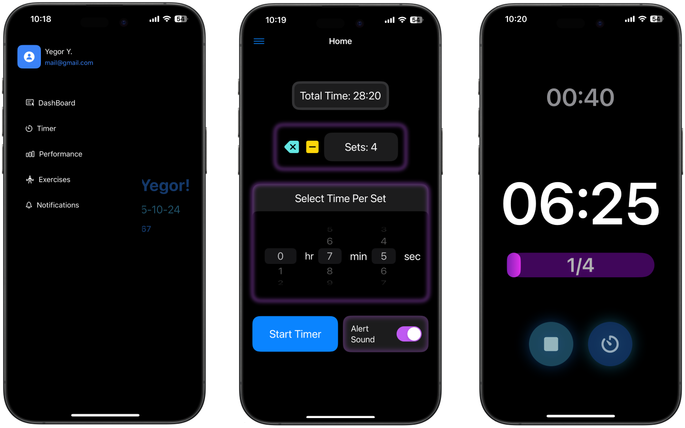
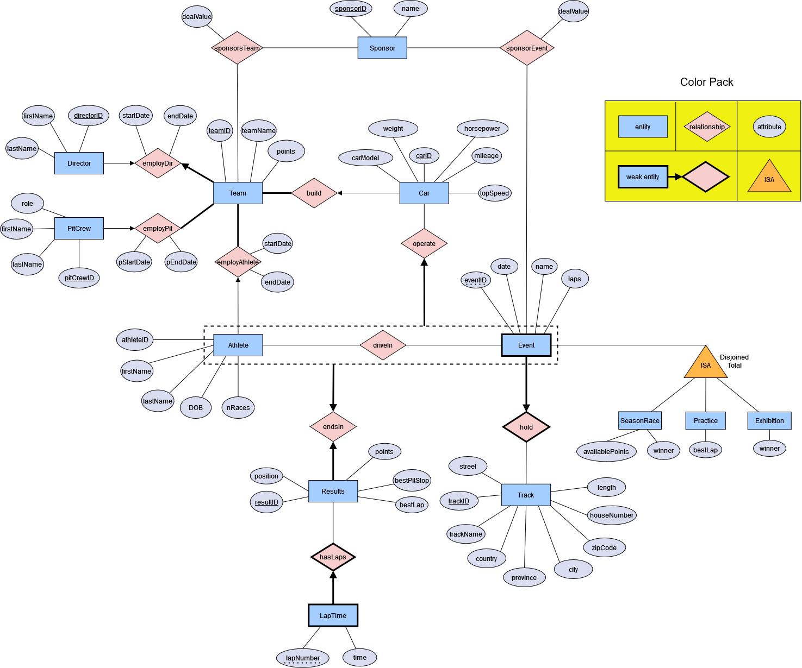
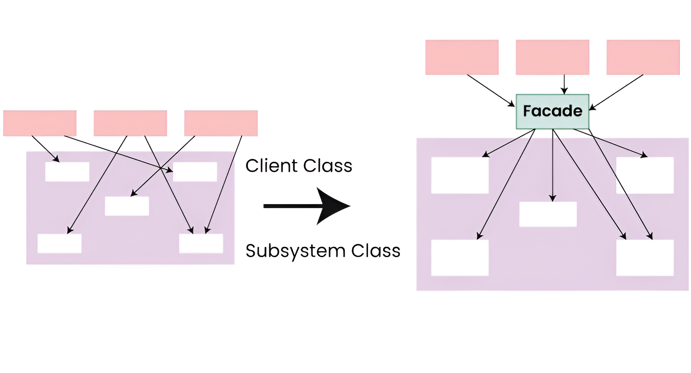
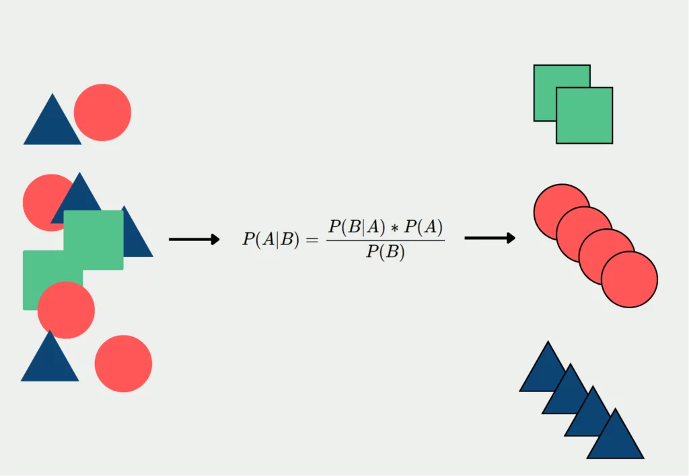

Backend systems
REST APIs, authentication, data modeling, migrations, integrations, testing, and service reliability.
Vancouver, BC - Software Developer
I develop SaaS platforms, secure REST APIs, data migration systems, reporting dashboards, and event-driven integrations. I am a UBC Computer Science graduate with Distinction and a hands-on builder across backend, data, mobile, and frontend work.
Profile
I am from Kazakhstan and now live in Vancouver, Canada. My work sits at the intersection of practical engineering and clear product outcomes: shipping features, making complex data move safely, and turning backend systems into useful experiences.
I am fluent in English and Russian, and international experience across Kazakhstan, the UAE, Turkey, and Canada has made me adaptable in new teams and environments.
REST APIs, authentication, data modeling, migrations, integrations, testing, and service reliability.
Reporting dashboards, event-driven pipelines, SQL, Python analysis, and machine learning foundations.
SwiftUI apps, React interfaces, polished interaction flows, and feature work from idea to shipped state.
Professional Path
Remote
OlaTech Corporation
Graduation milestone
The University of British Columbia
Completed the Computer Science degree program in Vancouver after four years of technical coursework, project work, and applied software development.
Vancouver, BC
The University of British Columbia
Technical Skills
Projects

View detailsiOS app
Custom workout timer built in SwiftUI with configurable sets, reps, rest durations, alert preferences, and preserved progress across sessions.

View detailsDatabase system
Team-built Java Swing and Oracle DB prototype for managing Formula 1 athletes, teams, cars, sponsorships, race results, and historical performance.

View detailsBackend query engine
TypeScript and Node.js query application for extracting insights from dynamic JSON datasets, built iteratively against strict customer specifications.

View detailsMachine learning CLI
Pure Haskell command-line classifier that trains on review datasets, preprocesses text, saves model state, and predicts sentiment from user input.
Notes
Comfortable communicating with diverse teams, students, stakeholders, and international peers.
Life across Kazakhstan, the UAE, Turkey, and Canada shaped how I adapt, learn, and build relationships.
Training is a steady part of my routine, especially calisthenics, with past experience in soccer, boxing, and gym work.
I use algorithm practice to keep fundamentals sharp and build speed with problem decomposition.
View LeetCode profileCalisthenics